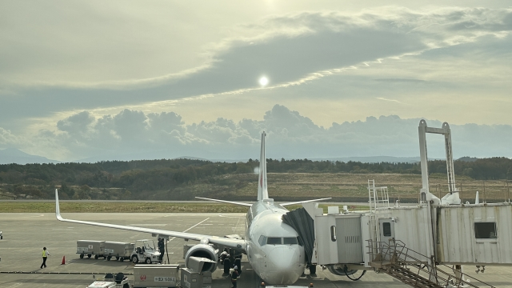
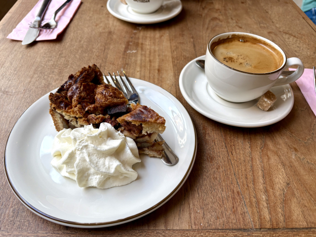
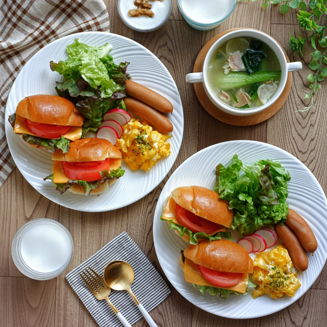

りんごカフェ
出発ロビーにある「りんごカフェ」は、旅の前のひとときをゆったり過ごせる明るいカフェです。地元の農園から届くりんごを使ったスイーツやドリンクを、一年を通してお楽しみいただけます。大きな窓からは滑走路が見渡せ、飛行機の離着陸を眺めながらくつろげるのも人気の理由です。早朝から営業しているので、朝一番のフライト前の軽い朝食にもぴったり。テイクアウトもご用意しています。
おすすめメニュー
- 焼きりんごのタルトタタン
- 自家製りんごのホットアップルティー

りんごレストラン

ターミナル3階の「りんごレストラン」では、地元の食材とりんごを組み合わせたこだわりの料理をご提供しています。りんごの甘みと酸味を活かしたソースや付け合わせが、お肉やお魚の味わいを一層引き立てます。落ち着いた雰囲気の店内は、ご家族でのお食事や大切な方との旅の締めくくりにもおすすめです。到着後のランチや、お見送りの前のディナーにもぜひお立ち寄りください。
おすすめメニュー
- りんご豚のロースト 特製アップルソース添え
- りんごと季節野菜のハーブサラダ